Python in General
Useful information about libraries
Change Jupyter notebook starting directory: jupyter notebook --notebook-dir=D:
Matplotlib
- Customizing style sheets
Before Using Style:
import numpy as np
import matplotlib.pyplot as plt
data = np.random.randn(50)
plt.plot(data)
plt.show()
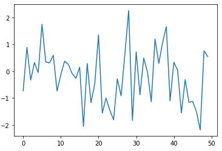
After Using Style:
plt.style.use('ggplot')
plt.plot(data)
plt.show()
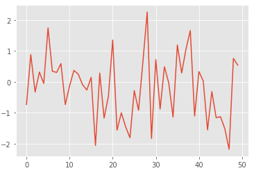
To see avaliable styles: plt.style.available
Visualization with Pandas
import pandas as pd
import seaborn as sns
import numpy as np
data = pd.DataFrame(np.random.rand(10, 4), columns=['A','B','C','D'])
data
A B C D
0 0.271686 0.105439 0.473730 0.490360
1 0.901196 0.785185 0.789935 0.746689
2 0.561274 0.853798 0.442205 0.340178
3 0.967522 0.254893 0.349356 0.314970
4 0.981050 0.084075 0.652177 0.789420
5 0.330425 0.005584 0.025657 0.345348
6 0.847339 0.569559 0.668655 0.135351
7 0.564038 0.855259 0.832140 0.530637
8 0.087447 0.901836 0.190969 0.951888
9 0.554184 0.211951 0.009899 0.312860
Plot line: data.plot()
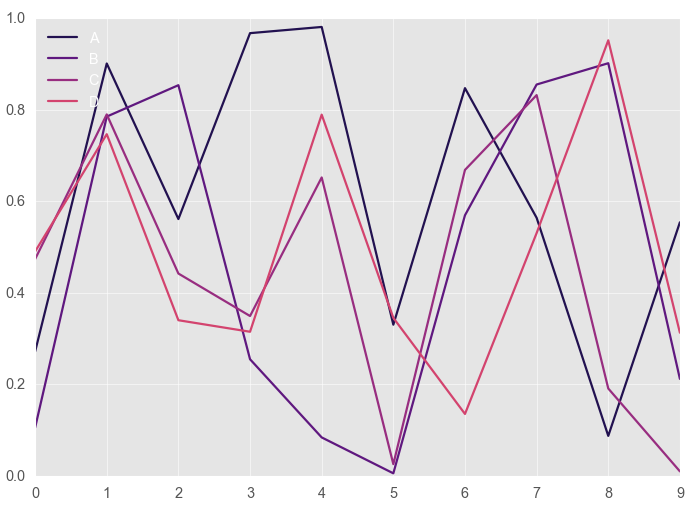
Plot line with subplots: data.plot(subplots=True,figsize=(12,12))
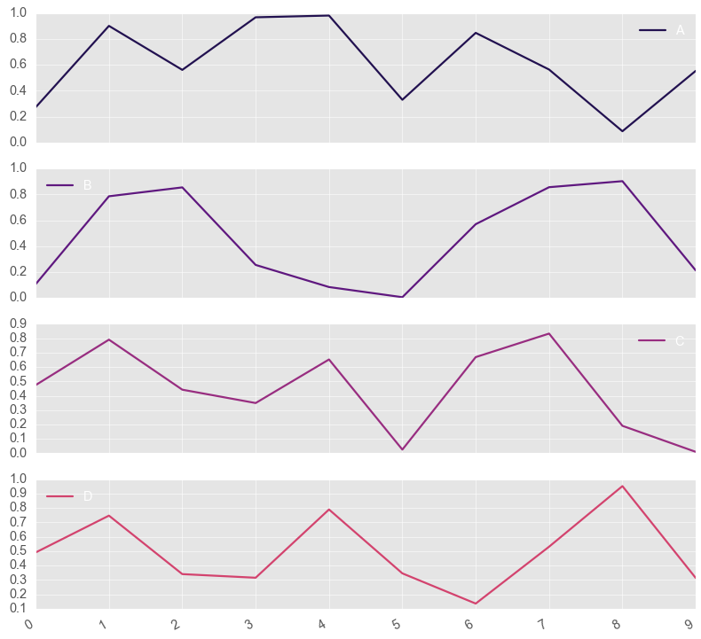
Plot line with layout of subplots: data.plot(subplots=True,figsize=(12,12), layout=(2,2))
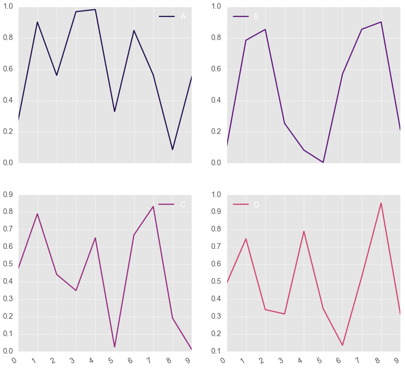
Columns per row barplot: data.plot.bar()
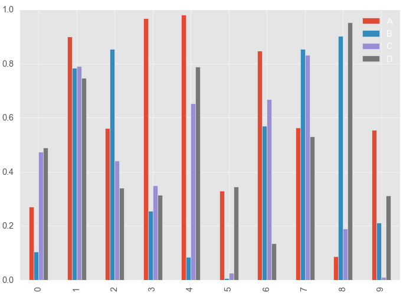
Columns per row stacked bar: data.plot.bar(stacked=True)
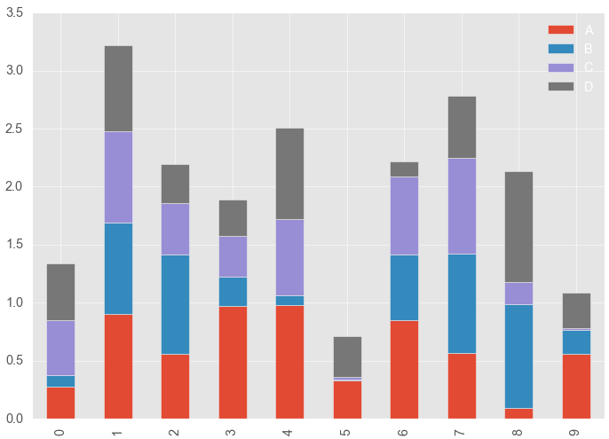
Horizontal bar (remove stacked if no need): data.plot.barh(stacked=True)
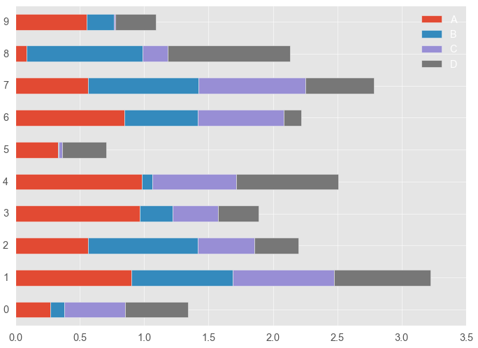
Change color map before plotting if you want:
sns.set_palette('magma')
data.plot.barh(stacked=True)
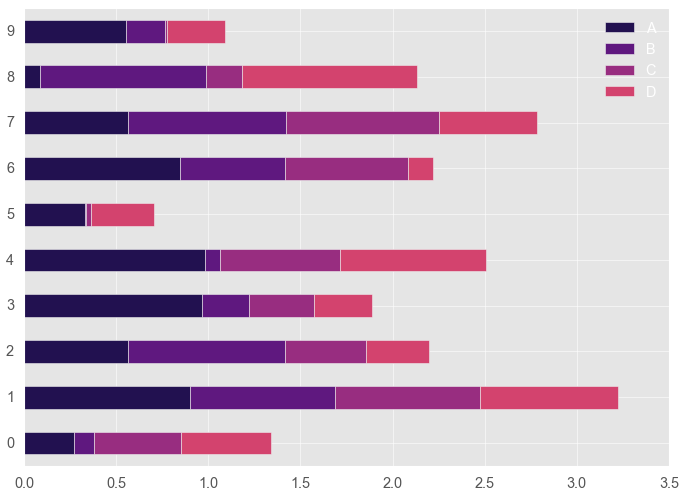
Plot the area:data.plot.area()
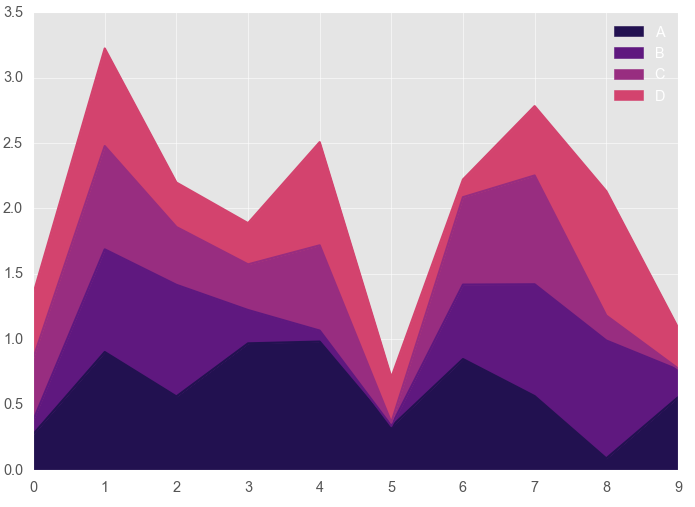
Area is plotted stacked in default. Without stack: data.plot.area(stacked=False, alpha=0.5)
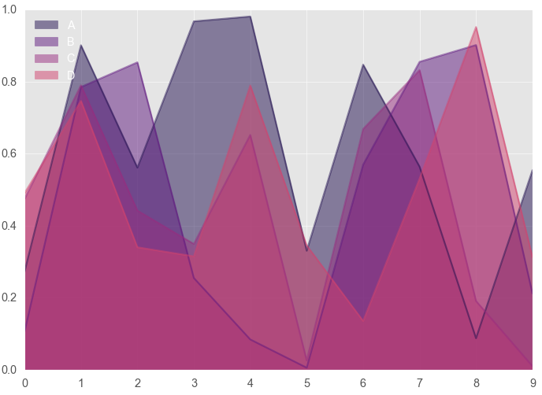
Plot distribution: data.plot.kde()
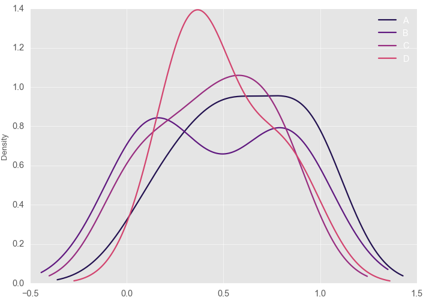
Plot scatter:
data.plot.scatter(x='A',y='B', #scatterplot x and y
c='red', #color of data points
s=data['B']*200) #size of data points respect to values of B column
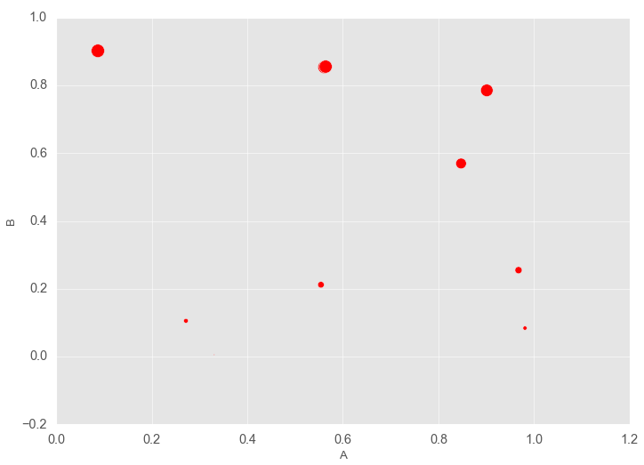
DataFrame with billions of rows: Vaex
Vaex is DataFrame library just like Pandas but waaaay better than Pandas if we have billions of rows.
GitHub Page
Introduction